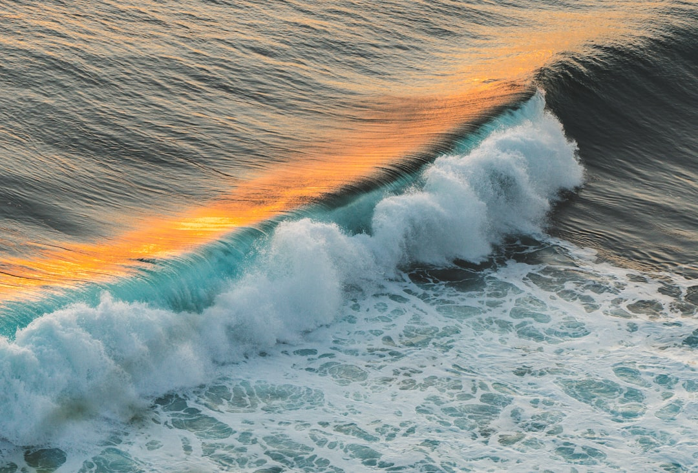

Climate Change Impact
Understanding sea level rise and its impact on Aotearoa New Zealand's coastline.
Check Coastal Risk Learn More
Coastline at Risk
Buildings Exposed
Rise by 2100
Sea level rise affects Aotearoa in multiple interconnected ways.
Waves and storms are gradually eroding New Zealand's coastline.
Roads, homes and public facilities face increased flood risk.
Coastal communities may face relocation and long-term challenges.
Scientists predict significant sea-level increases by 2100.
"Ko au te moana, ko te moana ko au"
I am the ocean, and the ocean is me.
This whakataukī highlights the deep connection between people and the natural world.